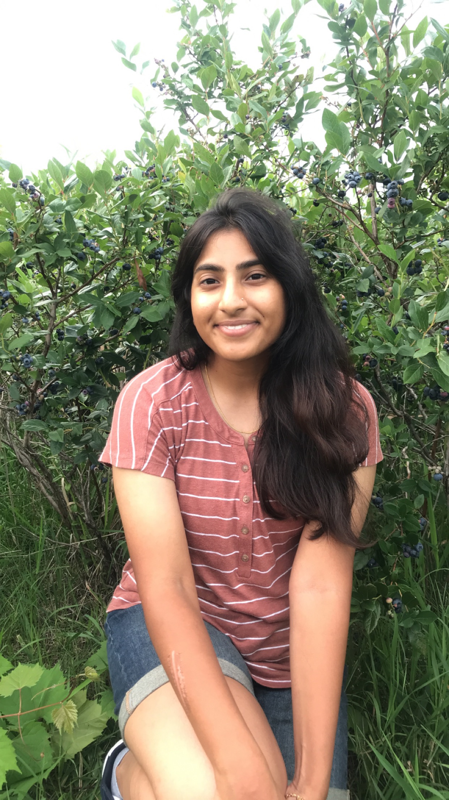

Hi, I'm Teja Balasubramanian -- I am currently a junior studying Chemical Engineering and Chemistry at the University of Wisconsin-Madison. Alhtough I am not an expert on cooking in any way, shape or form, I really enjoy it! I love trying new recipes, especially from new cultures. I know that I still have a long way to go, but this website is a small start to scrapbooking my way through various dishes. It is also a project for my LIS 351 class, where I am learning to code in html (a markup language) and css for the first time :)

"A recipe has no soul. You, as the cook, must bring soul to the recipe" - Thomas Keller
“Food for us comes from our relatives, whether they have wings or fins or roots.
That is how we consider food. Food has a culture. It has a history. It has a story.
It has relationships.” - Winona LaDuke
Have an egg-cellent day!